The goal of this lecture is to learn a variety of methods used for trend visualization (such that make a trend in noisy data more apparent), trend modeling (such that can help us to come up with ‘an equation’ for the trend, which could be further studied or used for interpolation, forecasting, or detrending), and detrending (just to remove trend from the series, with or without modeling it). You should be able to choose a method based on the goals of your analysis. We will start with simple and widely used methods that can be further combined into more elaborate algorithms.
Chapter 5 in Kirchgässner and Wolters (2007) (optional)
3.1 Introduction
Recall the classical decomposition \[
Y_t = M_t + S_t + \epsilon_t,
\tag{3.1}\] where \(M_t\) is a slowly changing function (trend component), \(\epsilon_t\) is stationary random noise component, and \(S_t\) is the periodic term with the period \(m\geqslant 2\) (seasonal component) and scaling factors \(\lambda_k > 0\) such that \(S_{t+km} = \lambda_kS_t\) for \(1 \leqslant t \leqslant m\) and each \(k \geqslant 1\). For identification, we need \(\sum_{t=1}^m S_t = 0\) and \(\mathrm{E}(\epsilon_t)=0\).
Our goal is to estimate and extract \(M_t\) and \(S_t\) with the hope that the residual or noise component \(\epsilon_t\) will turn out to be a stationary time series (Section 3.2–Section 3.5). Alternatively, Box–Jenkins models use difference operators repeatedly to the series \(Y_t\) until a stationary time series is obtained (see Section 3.7 on differencing).
The seasonal component is said to have constant seasonal variation if the scaling factors satisfy \(\lambda_{k} = 1\) for all \(k\). In other words, \(S_{t+m} = S_{t}\) for all \(t\). The constant variation is an assumption of most modeling techniques we will be using in this course. Unfortunately, many real seasonal time series do not have this constancy property and it is necessary to first perform a variance-stabilizing transformation to modify the original time series into one with constant variation. To some extent, this is a matter of trial and error, where we work from ‘weaker’ transformations to ‘stronger’ transformations as needed. Typically, power transformations are used \(Y_{t} \rightarrow Y^{\lambda}_{t}\), where \(0 < \lambda < 1\) or, log or even log log transformations, e.g., \(Y_{t} \rightarrow \log Y_{t}\).
The log transformation of \(Y_t\) is convenient when we assume not an additive model as Equation 3.1 is, but a multiplicative model as \[
Y_t = M_t \cdot S_t \cdot \epsilon_t.
\tag{3.2}\] When applying variance-stabilizing log transformation to Equation 3.2, we get an additive result: \[
\log Y_t = \log M_t + \log S_t + \log \epsilon_t,
\tag{3.3}\] which is now similar to Equation 3.1. We will refer to Equation 3.1 as additive seasonality, and to Equation 3.2 as multiplicative seasonality. Only a few methods can deal with the multiplicative case Equation 3.2 directly; most methods we consider in this course will require us to apply a transformation as in Equation 3.3.
In the following sections, we consider methods for the estimation and elimination of \(M_t\) (for non-seasonal data, when \(S_t = 0\) in the additive case Equation 3.1 or \(S_t = 1\) in the multiplicative case Equation 3.2) and of both \(M_t\) and \(S_t\) (for seasonal data).
3.2 Finite moving average smoothing
The non-seasonal model with a trend: \[
Y_t = M_t + \epsilon_t,
\] where \(\mathrm{E}(\epsilon_t)=0\) and \(t=1,\dots,n\).
Let \(q\) be a nonnegative integer (\(q \in \mathbb{N}^{+}\)) and consider the two-sided moving average of the series \(Y_t\): \[
\begin{split}
W_t &= \frac{1}{2q+1}\sum_{j=-q}^q Y_{t-j}\\
&= \frac{1}{2q+1}\sum_{j=-q}^q M_{t-j} + \frac{1}{2q+1}\sum_{j=-q}^q \epsilon_{t-j} \\
&\approx M_t,
\end{split}
\tag{3.4}\] where \(w = 2q+1\) is the size of the moving window. Note that the above approximation is correct if the average value of \(\epsilon_{t}\) within each window is close to 0 (important for selecting \(q\)).
NoteExample: Shampoo plots
Figure 3.1 shows a time series plot of monthly shampoo sales. While the data are monthly, the seasonal component is not visible:
no strong periodicity in the time series plot;
the ACF at seasonal lag (1 year) is not significant.
Therefore, we apply Equation 3.4 treating the shampoo time series as non-seasonal data.
# Get the data from the package fmashampoo<-fma::shampooshampoo
#> Jan Feb Mar Apr May Jun Jul Aug Sep Oct Nov Dec
#> 1 266 146 183 119 180 168 232 224 193 123 336 186
#> 2 194 150 210 273 191 287 226 304 290 422 264 342
#> 3 340 440 316 439 401 437 576 408 682 475 581 647
Code
pshampoo<-ggplot2::autoplot(shampoo, col ="grey50")+xlab("Year")+ylab("Sales")p2<-forecast::ggAcf(shampoo)+ggtitle("")+xlab("Lag (months)")pshampoo+p2+plot_annotation(tag_levels ='A')
Figure 3.1: Monthly shampoo sales over three years and a corresponding sample ACF.
There are multiple ways to calculate moving averages in R, and formulas for \(W_t\) may vary. If using someone’s else functions, remember to read the help files or source code to find out the exact formula in place of Equation 3.4. Below are some examples.
Note
The package forecast is now retired in favor of the package fable.
For example, forecast::ma() has the default option centre = TRUE, and the order argument represents the window size. Odd order and centre = TRUE correspond exactly to our definitions in Equation 3.4:
#> Jan Feb Mar Apr May Jun Jul Aug Sep Oct Nov Dec
#> 1 NA NA 179 159 177 185 200 188 222 213 206 198
#> 2 215 203 204 222 238 256 260 306 301 324 332 362
#> 3 341 376 387 407 434 452 501 516 544 559 NA NA
#> Jan Feb Mar Apr May Jun Jul Aug Sep Oct Nov Dec
#> 1 NA NA 179 159 177 185 200 188 222 213 206 198
#> 2 215 203 204 222 238 256 260 306 301 324 332 362
#> 3 341 376 387 407 434 452 501 516 544 559 NA NA
#> Jan Feb Mar Apr May Jun Jul Aug Sep Oct Nov Dec
#> 1 NA NA NA NA 179 159 177 185 200 188 222 213
#> 2 206 198 215 203 204 222 238 256 260 306 301 324
#> 3 332 362 341 376 387 407 434 452 501 516 544 559
Figure 3.3: Shampoo sales over three years smoothed with non-centered moving average filters, where the window size is \(w = 2q+1\).
3.2.1 Moving average smoothing for seasonal data
Come back to the trend-seasonal model Equation 3.1: \[
Y_t = M_t + S_t + \epsilon_t.
\]
We apply the following steps for estimating seasonality and trend:
Apply a moving average filter specially chosen to eliminate the seasonal component and dampen the noise – get \(\hat{M}_t\). Remember that the sum of \(S_t\) within each period is 0. Hence, to smooth out the seasonal component (and noise) and get an estimate of just \(M_t\), we will use a moving window \(w\) sized as the seasonal period \(m\) (more generally, \(w = km\), where \(k\in \mathbb{N}^{+}\), if a greater smoothness is desired). It will often lead to the even window size \(w\). For even \(w\), Equation 3.4 is modified as follows (we now use \(km + 1\) elements so the window is still centered, but the elements on the ends receive half the weight): \[
\hat{M}_t = \frac{0.5Y_{t-km/2} + Y_{t-km/2 + 1} +\dots+Y_{t+km/2-1} + 0.5Y_{t+km/2}}{km}.
\tag{3.5}\]
Use \(Y_t - \hat{M}_t\) to estimate the seasonal component – get \(\hat{S}_t\). If needed, correct the estimates, to sum up to 0 in each period. Let \(\hat{S}^*_t\) be the corrected values.
Use deseasonalized data \(Y_t - \hat{S}^*_t\) to re-estimate the trend. Let \(\hat{M}^*_t\) be the corrected trend estimate.
The estimated random noise is then: \(\hat{\epsilon}_t = Y_t - \hat{M}^*_t - \hat{S}^*_t\).
Note
For the multiplicative case, replace subtractions with divisions and let the product of \(\hat{S}^*_t\) be 1 within each seasonal period.
The above algorithm is implemented in stats::decompose(), but its main disadvantage is in the centered moving average filter used to estimate \(M_t\) that does not produce smoothed values for the most recent observations. We can elaborate this algorithm, first, by using different estimators for \(M_t\); second, by also replacing estimators for \(S_t\) (e.g., see the next section).
Figure 3.5: Trend-seasonal decomposition of monthly average Secchi disk depth at station CB1.1.
NoteExample: Secchi depth manual simple moving average smoothing
To replicate the behavior of the function stats::decompose() or tune the outputs, use the following code. For example, Figure 3.5 shows a wiggly trend that we might want to smooth more, using a bigger window, such as 24 months instead of 12 months.
Yt<-Secchit<-as.vector(time(Yt))month<-as.factor(cycle(Yt))# 1. Initial trend estimatewindow_size=24Mt<-stats::filter(Yt, filter =1/c(2*window_size, rep(window_size, window_size-1), 2*window_size), sides =2)# 2. Estimate of the seasonality, corrected to sum up to 0St<-tapply(Yt-Mt, month, mean, na.rm =TRUE)St
# 3. Refined trend estimateMt_star<-stats::filter(Yt-St_star[month], filter =1/c(2*window_size, rep(window_size, window_size-1), 2*window_size), sides =2)# 4. Noiseet<-Yt-Mt_star-St_star[month]# Convert back to ts format for plottinget<-ts(as.vector(et), start =start(Secchi), frequency =12)
p1<-pSecchi+geom_line(aes(y =Mt_star), col =4, lwd =1.5)+ggtitle("Trend estimate: Mt_star")p2<-pSecchi+geom_line(aes(y =Mt_star+St_star[month]), col =4, lwd =1.5)+ggtitle("Final trend-cycle: Mt_star + St_star")p3<-ggplot2::autoplot(et)+xlab("Year")+ggtitle("Residuals: et")p4<-forecast::ggAcf(et)+ggtitle("ACF of residuals")+xlab("Lag (months)")(p1+p2)/(p3+p4)+plot_annotation(tag_levels ='A')
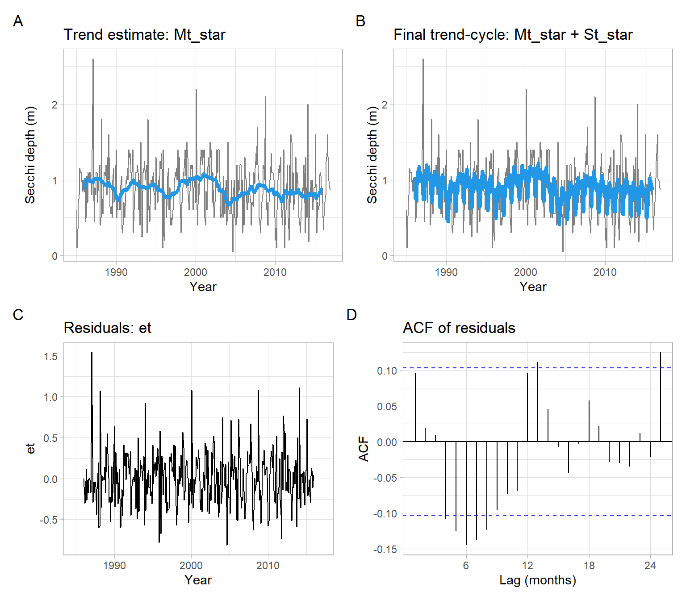
Figure 3.6: Detrending using simple moving average and deseasonalizing the Secchi depth data.
3.3 Lowess smoothing
One of the alternatives for estimating trends \(M_t\) is locally weighted regression (shortened as ‘lowess’ or ‘loess’) (Cleveland 1979). We can apply lowess as a regression of \(Y_t\) on time, for example, using the algorithm outlined by Berk (2016):
Choose the smoothing parameter such as bandwidth, \(f\), which is a proportion between 0 and 1.
Choose a point \(t_0\) and its \(w = f n\) nearest points on the time axis.
For these \(w\) nearest neighbor points, compute a weighted least squares regression line for \(Y_t\) on \(t\). The coefficients \(\boldsymbol{\beta}\) of such regression are estimated by minimizing the residual sum of squares \[
\text{RSS}^*(\boldsymbol{\beta}) = (\boldsymbol{Y}^* - \boldsymbol{X}^* \boldsymbol{\beta})^{\top} \boldsymbol{W}^* (\boldsymbol{Y}^* - \boldsymbol{X}^* \boldsymbol{\beta}),
\] where the asterisk indicates that only the observations in the window are included. The regressor matrix \(\boldsymbol{X}^*\) can contain polynomial terms of time, \(t\). The \(\boldsymbol{W}^*\) is a diagonal matrix conforming to \(\boldsymbol{X}^*\), with diagonal elements being a function of distance from \(t_0\) (observations closer to \(t_0\) receive higher weights).
Calculate the fitted value \(\tilde{Y}_t\) for that single \(t_0\).
Repeat Steps 2–4 for each \(t_0 = 1,\dots,n\).
By selecting large bandwidth \(f\) in the lowess algorithm, we can obtain greater smoothing (see Figure 3.7).
Figure 3.7: A lowess illustration, adapted from Berk (2016).
Note
The function ggplot2::geom_smooth() has the default setting se = TRUE that produces a confidence interval around the smooth. In time series applications, autocorrelated residuals may lead to underestimated standard errors and incorrect (typically, too narrow) confidence intervals. Hence, we set se = FALSE. For testing the significance of the identified trends, see lectures on trend testing (detection).
3.3.1 Lowess smoothing for seasonal data
Now use the Secchi time series (Figure 3.4) and implement the procedure of detrending and deseasonalizing from Section 3.2.1, but replace the simple moving average estimates of \(M_t\) with lowess estimates.
Yt<-Secchit<-as.vector(time(Yt))month<-as.factor(cycle(Yt))# 1. Initial trend estimateMt<-loess(Yt~t, span =0.25)$fitted# 2. Estimate of the seasonality, corrected to sum up to 0St<-tapply(Yt-Mt, month, mean)St
# 3. Refined trend estimateMt_star<-loess((Yt-St_star[month])~t, span =0.25)$fitted# 4. Noiseet<-Yt-Mt_star-St_star[month]# Convert back to ts format for plottinget<-ts(as.vector(et), start =start(Secchi), frequency =12)
p1<-pSecchi+geom_line(aes(y =Mt_star), col =4, lwd =1.5)+ggtitle("Trend estimate: Mt_star")p2<-pSecchi+geom_line(aes(y =Mt_star+St_star[month]), col =4, lwd =1.5)+ggtitle("Final trend-cycle: Mt_star + St_star")p3<-ggplot2::autoplot(et)+xlab("Year")+ggtitle("Residuals: et")p4<-forecast::ggAcf(et)+ggtitle("ACF of residuals")+xlab("Lag (months)")(p1+p2)/(p3+p4)+plot_annotation(tag_levels ='A')
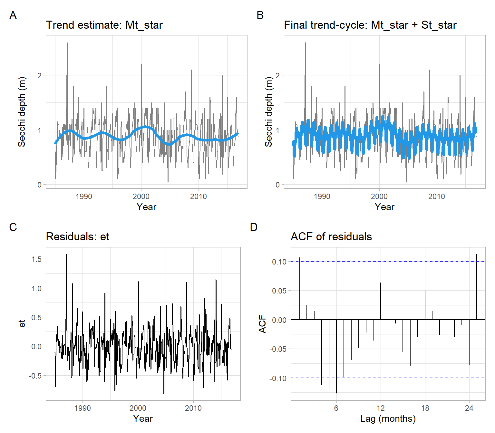
Figure 3.8: Detrending using lowess and deseasonalizing the Secchi depth data.
In Figure 3.9, we use the decomposition function stl() forced to have approximately the same values as we used in the steps above and as shown in Figure 3.8. Hence, Figure 3.8 and Figure 3.9 are similar. However, the function stl() is more flexible – it also automatically smooths the seasonal component (across Januaries, across Februaries, etc.) – and can provide finer estimates (see Figure 3.10).
Code
# Span we used above (the fraction)span=0.25# Window size in number of lags (observations)w<-span*length(Secchi)/2D<-stl(Yt, s.window ="periodic", t.window =w)Mt_star<-D$time.series[,"trend"]St_star<-D$time.series[,"seasonal"]et<-D$time.series[,"remainder"]p1<-pSecchi+geom_line(aes(y =Mt_star), col =4, lwd =1.5)+ggtitle("Trend estimate: Mt_star")p2<-pSecchi+geom_line(aes(y =Mt_star+St_star), col =4, lwd =1.5)+ggtitle("Final trend-cycle: Mt_star + St_star")p3<-ggplot2::autoplot(et)+xlab("Year")+ggtitle("Residuals: et")p4<-forecast::ggAcf(et)+ggtitle("ACF of residuals")+xlab("Lag (months)")(p1+p2)/(p3+p4)+plot_annotation(tag_levels ='A')
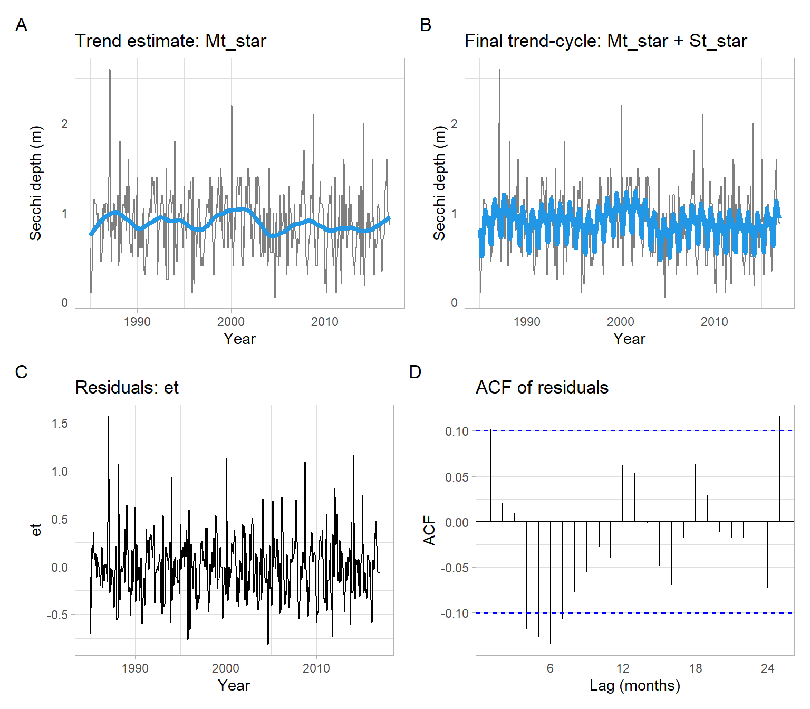
Figure 3.9: Detrending and deseasonalizing the Secchi depth data using lowess within the function stl() forced to behave similarly to Figure 3.8.
Code
D<-stl(Yt, s.window =24, s.degree =1, t.window =w)Mt_star<-D$time.series[,"trend"]St_star<-D$time.series[,"seasonal"]et<-D$time.series[,"remainder"]p1<-pSecchi+geom_line(aes(y =Mt_star), col =4, lwd =1.5)+ggtitle("Trend estimate: Mt_star")p2<-pSecchi+geom_line(aes(y =Mt_star+St_star), col =4, lwd =1.5)+ggtitle("Final trend-cycle: Mt_star + St_star")p3<-ggplot2::autoplot(et)+xlab("Year")+ggtitle("Residuals: et")p4<-forecast::ggAcf(et)+ggtitle("ACF of residuals")+xlab("Lag (months)")(p1+p2)/(p3+p4)+plot_annotation(tag_levels ='A')
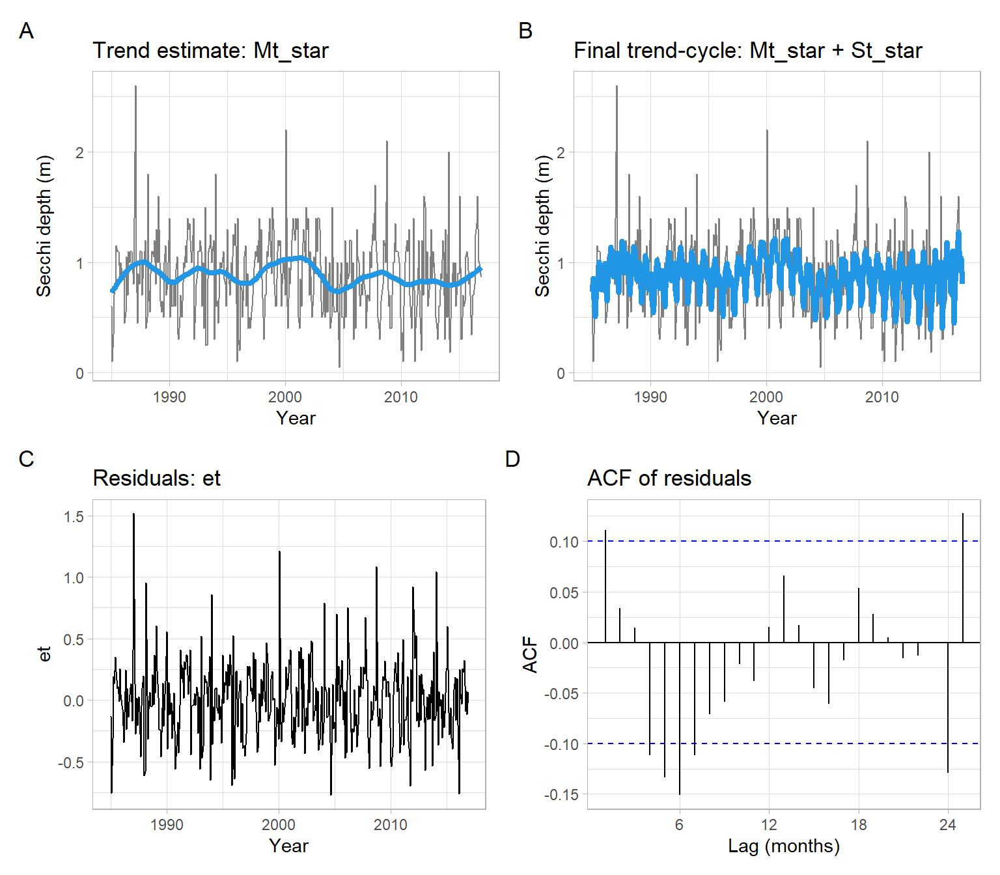
Figure 3.10: Detrending and deseasonalizing the Secchi depth data using lowess within the function stl() with default settings.
3.4 Exponential smoothing
Exponential smoothing (ES) is a successful forecasting technique. It turns out that ES can be modified to be used effectively for time series with
combination of trend and seasonality (Holt–Winters method).
ES is easy to adjust for past errors and easy to prepare follow-on forecasts. ES is ideal for situations where many forecasts must be prepared. Several different functional forms of ES are used depending on the presence of trend or cyclical variations.
In short, an ES is an averaging technique that uses unequal weights while the weights applied to past observations decline in an exponential manner.
Single exponential smoothing calculates the smoothed series as a damping coefficient \(\alpha\) (\(\alpha \in [0, 1]\)) times the actual series plus \(1 - \alpha\) times the lagged value of the smoothed series. For the model \[
Y_{t} = M_t + \epsilon_{t},
\] the updating equation is \[
\begin{split}
\hat{M}_1 &= Y_1\\
\hat{M}_t &= \alpha Y_t + (1 - \alpha) \hat{M}_{t - 1}
\end{split}
\] and the forecast is \[
\hat{Y}_{t+1} = \hat{M}_t.
\]
An exponential smoothing over an already smoothed time series is called double exponential smoothing. In some cases, it might be necessary to extend it even to a triple exponential smoothing.
Holt’s linear exponential smoothing Suppose that the series \(Y_t\) is non-seasonal but displays a trend. Now we need to estimate both the current mean (a.k.a. level) and the current trend.
The updating equations express ideas similar to those for exponential smoothing. However, now we have two smoothing parameters, \(\alpha\) and \(\beta\) (\(\alpha \in [0, 1]\); \(\beta \in [0, 1]\)).
The updating equations are \[
a_{t} = \alpha Y_{t} + \left( 1- \alpha \right) \left( a_{t - 1} + b_{t - 1} \right)
\] for the mean and \[
b_{t} = \beta \left( a_{t} - a_{t-1} \right) + \left( 1 - \beta \right) b_{t-1}
\] for the trend.
Then the forecasting for \(k\) steps into the future is \[
\hat{Y}_{t+k} = a_{t} + kb_{t}.
\]
Figure 3.11: Shampoo sales over three years smoothed with different exponential smoothing filters.
3.4.1 Exponential smoothing for seasonal data
Multiplicative Holt–Winters procedure
Now in addition to the Holt parameters, suppose that the series exhibits multiplicative seasonality and let \(S_{t}\) be the multiplicative seasonal factor at the time \(t\).
Suppose also that there are \(m\) observations in one period (in a year). For example, \(m = 4\) for quarterly data, and \(m = 12\) for monthly data.
In some time series, seasonal variation is so strong it obscures any trends or other cycles, which are important for our understanding of the observed process. Holt–Winters smoothing method can remove seasonality and makes long-term fluctuations in the series stand out more clearly.
A simple way of detecting a trend in seasonal data is to take averages over a certain period. If these averages change with time we can say that there is evidence of a trend in the series.
We now use three smoothing parameters: \(\alpha\), \(\beta\), and \(\gamma\) (\(\alpha \in [0, 1]\); \(\beta \in [0, 1]\); \(\gamma \in [0, 1]\)).
Then the forecasting for \(k\) steps into the future is \[
\hat{Y}_{t+k} = a_{t} + kb_{t} + S_{t + k - m},
\] where \(k = 1, 2, \dots, m\).
NoteExample: Airline passengers non-seasonal and seasonal exponential smoothing
Monthly totals of international airline passengers, 1949–1960 (see Figure 3.12). This is a classical example in time series analysis. Note that the seasonal variability increases with the increasing mean, hence, we deal with the multiplicative seasonality.
Code
pAirPassengers<-ggplot2::autoplot(AirPassengers, col ="grey50")+xlab("Year")+ylab("Airline passengers (thousand)")p2<-forecast::ggAcf(AirPassengers)+ggtitle("")+xlab("Lag (months)")pAirPassengers+p2+plot_annotation(tag_levels ='A')
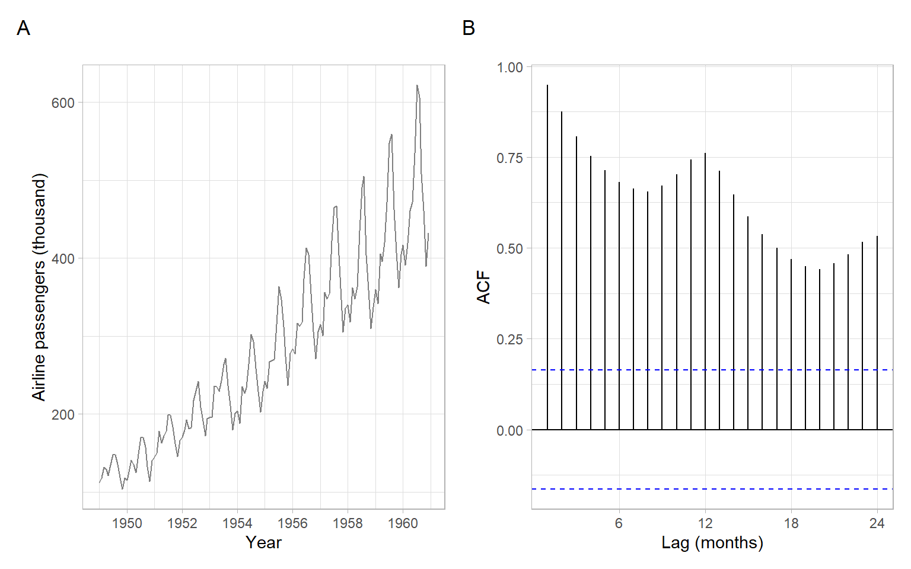
Figure 3.12: Monthly AirPassengers data and a corresponding sample ACF.
Comparison of various exponential smoothing techniques for the AirPassengers data:
The last multiplicative model is the best one, based on the sum of squared errors (SSE) in the training set (see Figure 3.13). For a more thorough comparison, consider using out-of-sample data in cross-validation.
Code
k=12fm1<-predict(m1, n.ahead =k)fm2<-predict(m2, n.ahead =k)fm3<-predict(m3, n.ahead =k)fm4<-predict(m4, n.ahead =k)p1<-pAirPassengers+geom_line(data =m1$fitted[,"xhat"], col =4)+autolayer(fm1)+ggtitle("Exponential smoothing")+theme(legend.position ="none")p2<-pAirPassengers+geom_line(data =m2$fitted[,"xhat"], col =4)+autolayer(fm2)+ggtitle("Holt's method")+theme(legend.position ="none")p3<-pAirPassengers+geom_line(data =m3$fitted[,"xhat"], col =4)+autolayer(fm3)+ggtitle("Additive Holt-Winters")+theme(legend.position ="none")p4<-pAirPassengers+geom_line(data =m4$fitted[,"xhat"], col =4)+autolayer(fm4)+ggtitle("Multiplicative Holt-Winters")+theme(legend.position ="none")(p1+p2)/(p3+p4)+plot_annotation(tag_levels ='A')
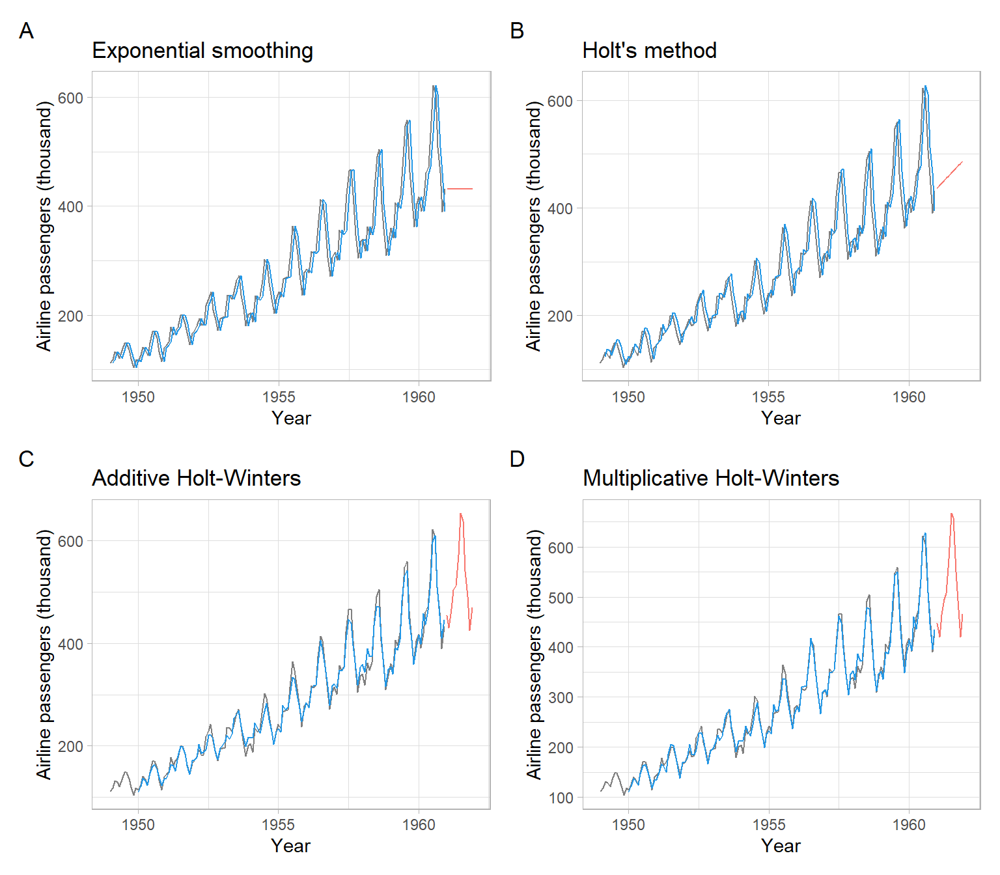
Figure 3.13: Plots of the observed, fitted, and predicted AirPassengers data, using various smoothing procedures.
3.5 Polynomial regression on time
This is a very intuitive procedure for fitting parametric trend functions to time series:
Make a parametric model assumption about \(M_t\) as a function of time \(t\), for example, quadratic trend: \[
M_t = \beta_0 + \beta_1 t + \beta_2 t^2
\]
Fit the model using the usual regression estimators (least squares or maximum likelihood)
Note
A nonstationary time series with a trend represented by a parametric function is a typical example of a trend-stationary time series or a time series with a deterministic trend. It is easy to make such a time series stationary by modeling and extracting the trend.
After estimating the trend coefficients with OLS, visualize the results (Figure 3.14).
Code
p1<-pAirPassengers+geom_line(aes(y =tm1$fitted.values), col =4, lwd =1.5)+ggtitle("Linear trend")p2<-pAirPassengers+geom_line(aes(y =tm2.3$fitted.values), col =4, lwd =1.5)+ggtitle("Quadratic trend")p1+p2+plot_annotation(tag_levels ='A')
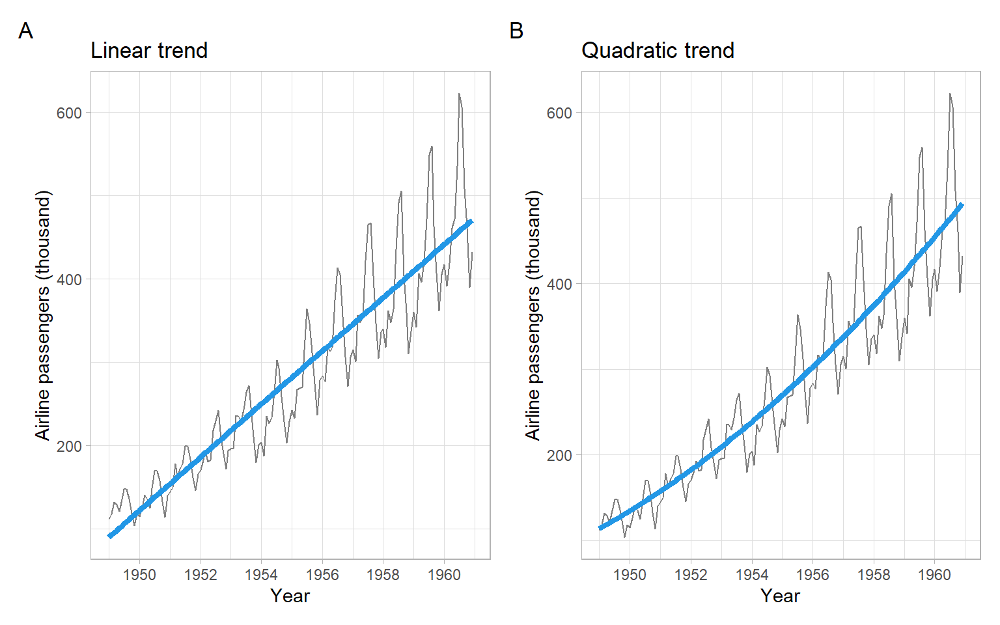
Figure 3.14: Plots of the AirPassengers data with estimated parametric linear and quadratic trends.
Note
The models tm2.1 and tm2.2 are equivalent. Model tm2.1 uses a pre-calculated quadratic transformation, while model tm2.2 applies the transformation on the fly within the R formula call, using the I() syntax (without the I() wrapper, the output of tm2.2 would be the same as of tm1, not tm2.1). However, both models tm2.1 and tm2.2 can easily violate the assumption of independence of predictors in linear regression, especially when values of the time index \(t\) are large. It applies to our example because the sequence \(t\) of decimal years goes from 1949 to 1960.917, and \(\widehat{\mathrm{cor}}(t, t^2) =\) 1. Therefore, model tm2.3 is preferred, because it is evaluated on orthogonal polynomials (centering and normalization are applied to \(t\) and \(t^2\)).
3.5.1 Seasonal regression with dummy variables
To each time \(t\) and each season \(k\) we will assign an indicator that ‘turns on’ if and only if \(t\) falls into that season. In principle, a seasonal period of any positive integer length \(m \geqslant 2\) is possible, however, in most cases, the length of the seasonal cycle is one year and so the seasonal period of the time series depends on the number of observations per year. Some common periods are \(m = 12\) (monthly data) and \(m = 4\) (quarterly data). For each \(k = 1, \dots, m\), we define the indicator \[
X_{k,t} = \left\{
\begin{array}{cl}
1, & \mbox{if} ~ t ~ \text{corresponds to season} ~ k, \\
0, & \mbox{if} ~ t ~ \text{does not correspond to season} ~ k. \\
\end{array}
\right.
\]
Note that for each \(t\) we have \(X_{1,t} + X_{2,t} + \dots + X_{m,t} = 1\) since each \(t\) corresponds to exactly one season. Thus, given any \(m - 1\) of the variables, the remaining variable is known and thus redundant. Because of this linear dependence, we must drop one of the indicator variables (seasons) from the model. It does not matter which season is dropped although sometimes there are choices that are simpler from the point of view of constructing or labeling the design matrix. Thus the general form of a seasonal model looks like \[
\begin{split}
f (Y_{t}) &= M_{t} + \beta_{2} X_{2,t} + \beta_{3} X_{3,t} + \dots + \beta_{m} X_{m,t} + \epsilon_{t} \\
&= M_{t} + \sum_{i=2}^{m}\beta_{i} X_{i,t} + \epsilon_{t},
\end{split}
\] where \(M_{t}\) is a trend term which may also include some \(\beta\) parameters and explanatory variables. The function \(f\) represents the appropriate variance-stabilizing transformations as needed. (Here the 1st season has been dropped from the model.)
NoteExample: Airline passengers polynomial smoothing with dummy variables for the seasons
Consider adding the dummy variables to model seasonality together with the quadratic trend in the AirPassengers time series. We noticed multiplicative seasonality in this time series before, therefore we apply a logarithmic transformation to the original data to transform the multiplicative seasonality into additive. That is, we need to estimate the model \[
\ln(Y_{t}) = \alpha_0 + \alpha_1 t + \alpha_2 t^2 + \sum_{i=2}^{12}\beta_{i} X_{i,t} + \epsilon_{t},
\] where \(X_{i,t}\) are the dummy variables for the months. (Here the first month has been dropped from the model, the same as in R the first factor level is dropped.)
If we were doing the regression analysis by hand, we would create a design matrix with its few top rows looking like this:
The way the months are represented above as separate columns of 0s and 1s is called one-hot encoding in the field of machine learning.
In R, it is enough to have one variable representing the seasons. This categorical variable should be saved as a factor. Then we apply the OLS method to find the model coefficients (see results in Figure 3.15):
p1<-pAirPassengers+geom_line(aes(y =exp(m$fitted.values)), col =4, lwd =1.5)p2<-forecast::ggAcf(m$residuals)+ggtitle("ACF of residuals")+xlab("Lag (months)")p1+p2+plot_annotation(tag_levels ='A')
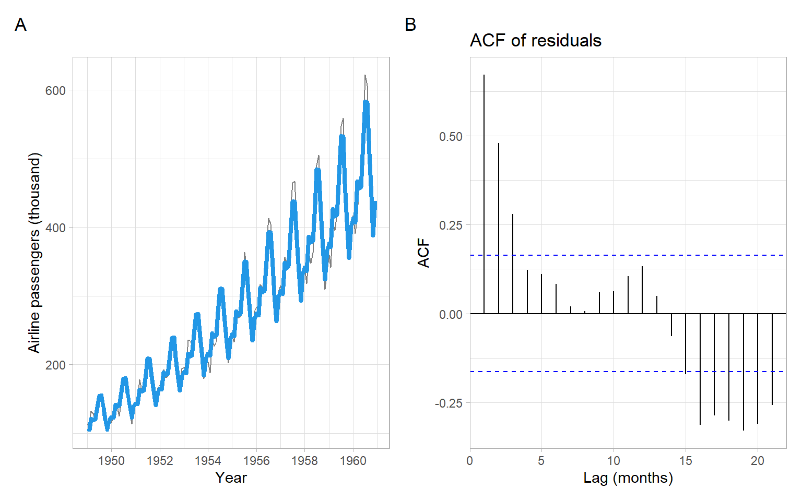
Figure 3.15: The AirPassengers data, with estimated parametric quadratic trend and seasonality (modeled using dummy variables), and ACF of the residuals. Since the model was fitted on the log scale, the trend-cycle estimates need to be exponentiated to match the original scale of the data.
3.5.2 Seasonal regression with Fourier series
It is a spoiler for the future lecture on spectral analysis of time series, but seasonal regression modeling would not be complete without introducing the trigonometric Fourier series.
We can fit a linear regression model using several pairs of trigonometric functions as predictors. For example, for monthly observations \[
\begin{split}
cos_{k} (i) &= \cos (2 \pi ki / 12), \\
sin_{k} (i) &= \sin (2 \pi ki / 12),
\end{split}
\] where \(i\) is the month within the year, and the trigonometric function has \(k\) cycles per year.
NoteExample: Airline passengers polynomial smoothing with Fourier series for the seasons
Now let us apply the method of sinusoids to the AirPassengers time series. We have one prominent and, possibly, one less prominent peak per year. Hence, we can test the model with \(k = 1\) and \(k = 2\). We will construct the following trigonometric predictors: \[
\begin{split}
cos_{1,t} &= \cos(2 \pi \text{month}_t/12),\\
sin_{1,t} &= \sin(2 \pi \text{month}_t/12),\\
cos_{2,t} &= \cos(4 \pi \text{month}_t/12),\\
sin_{2,t} &= \sin(4 \pi \text{month}_t/12)
\end{split}
\] to use in the model \[
\ln(Y_{t}) = \alpha_0 + \alpha_1 t + \alpha_2 t^2 + \beta_{1}cos_{1,t} + \beta_{2}sin_{1,t} + \beta_{3}cos_{2,t} + \beta_{4}sin_{2,t} + \epsilon_{t}.
\]
Calculate the predictors and estimate the model in R (see results in Figure 3.16):
p1<-pAirPassengers+geom_line(aes(y =exp(m$fitted.values)), col =4, lwd =1.5)p2<-forecast::ggAcf(m$residuals)+ggtitle("ACF of residuals")+xlab("Lag (months)")p1+p2+plot_annotation(tag_levels ='A')
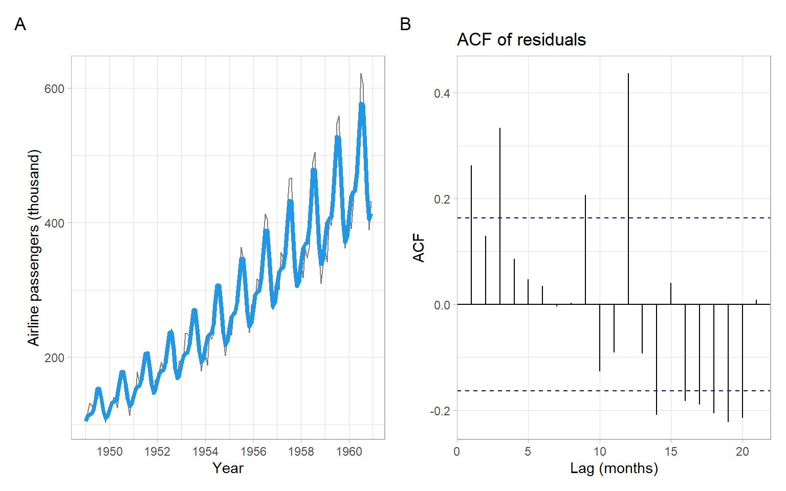
Figure 3.16: The AirPassengers data, with estimated parametric quadratic trend and seasonality (modeled using trigonometric functions), and ACF of the residuals. Since the model was fitted on the log scale, the trend-cycle estimates need to be exponentiated to match the original scale of the data.
3.6 Generalized additive models (GAMs)
An alternative way of modeling nonlinearities in trends, seasonality, and other patterns is by replacing the original variables with those individually transformed using smooth nonparametric functions, such as in a generalized additive model(GAM, Wood 2006). The model is called ‘generalized’ because the distribution of the response variable \(Y_t\) is not just normal but can be from a family of exponential distributions, such as Poisson, binomial, and gamma. A smooth monotonic function \(g(\cdot)\) called the ‘link function’ is applied to transform the response variable. However, our interest currently is in the additive nature of these models.
Instead of fitting a global nonlinear function like in a polynomial regression (Section 3.5) or fitting simpler local polynomials directly like in lowess smoothing (Section 3.3), we can construct a basis from basic splines (B-splines). B-splines are simple functions, which vanish outside the intervals defined by time points called the ‘knots.’ These splines are defined recursively, from the lowest to higher orders, starting from a simple indicator function for the intervals between the knots (see Appendix to Chapter 5 in Hastie et al. 2009; or Chapter 4.1 in Wood 2006 for the recursive formulas). Here we show the results of the recursive computations, for times \(t = 1, \dots,\) 100 and knots 1, 10, 20, 50 spaced unequally for illustration purposes (uniformly-spaced knots give us cardinal B-splines). Figure 3.17 shows a basis formed by B-splines of degree one, and Figure 3.18 shows splines of degree two.
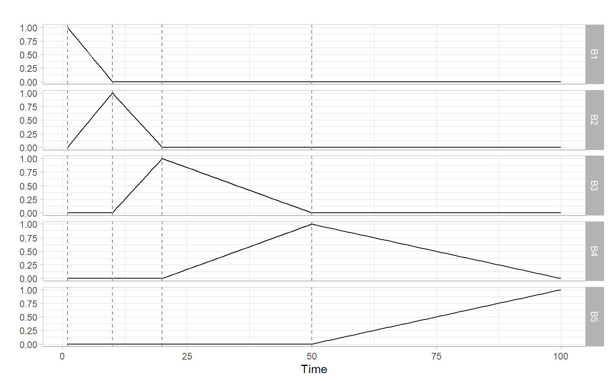
Figure 3.17: B-splines of degree one. The vertical dashed lines denote locations of the knots.
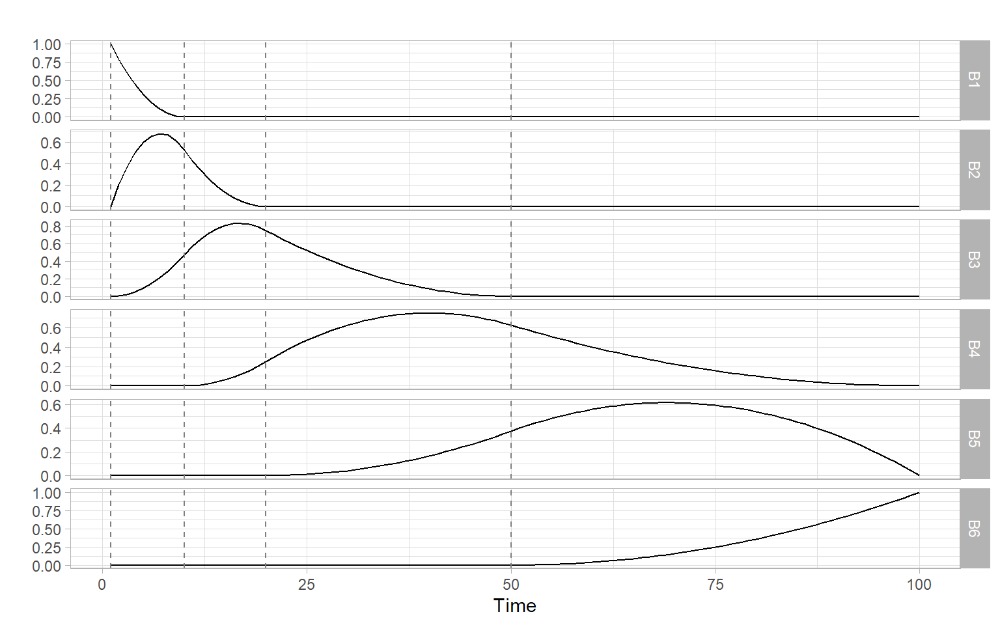
Figure 3.18: B-splines of degree two. The vertical dashed lines denote locations of the knots.
In the next step, the basis is used in regression, for example, to model the expected value \(\mu_t\) of the WWWusage data introduced in Section 3.3: \[
g(\mu_t) = \alpha_0 + f(t),
\tag{3.6}\] where \(\alpha_0\) is the intercept, and \(f(t)\) represents the added effects of the \(M\) basis functions \(B_m(t)\) (hence the word ‘additive’ in GAM): \[
f(t) = \sum_{m = 1}^M \beta_m B_m(t).
\] Here we may assume that the response WWWusage is normally distributed. The link function \(g(\cdot)\) for normal distribution is identity (no transformation to the original data), hence we can omit it and rewrite Equation 3.6 for our data as follows: \[
\mu_t = \alpha_0 + f(t).
\] We are not interested in the individual regression coefficients \(\beta_m\) (regression parameters) we estimated, hence the function \(f(t)\) is nonparametric even though many parameters have been estimated to obtain \(f(t)\), similar to lowess smoothing.
The model in Equation 3.6 can handle deviations from normality and can accommodate nonlinearity and nonmonotonicity of individual relationships, however, the model does not address the potential issue of remaining dependencies in the errors (e.g., see Kohn et al. 2000). We skip the topic of selecting an appropriate distribution, testing statistical significance of estimated patterns, or using the reported confidence intervals for inference until later in the course when we are familiar with various tests for autocorrelation and trends (e.g., see Chapter 7 on trend tests and Section 9.5 using additional covariates, specifying structure of the regression errors, and extending GAM to several parameters of an exponential distribution beyond just the mean).
Figure 3.19 shows the results of fitting the model in Equation 3.6 to the bases shown in Figure 3.17 and Figure 3.18. The results are not so bad given the knots were set without considering the data.
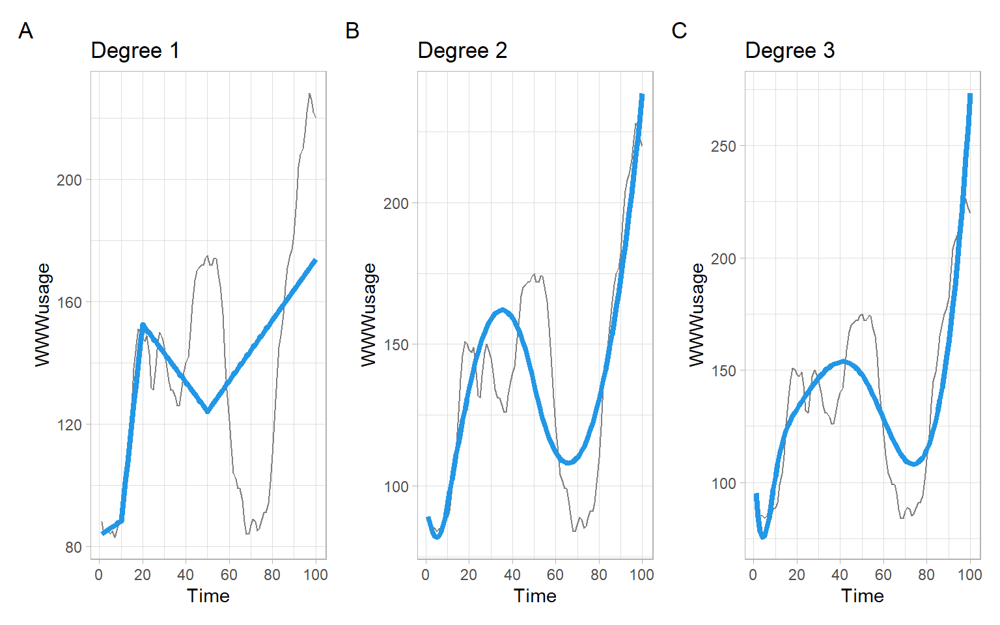
Figure 3.19: Results of regressing WWWusage on the linear, quadratic, and cubic B-spline bases. The fit in each case is suboptimal because the knots were set arbitrarily.
The number and locations of the knots are important tuning parameters for achieving the desired smoothness. Fortunately, there exist cross-validation procedures and penalization techniques that allow us to set these parameters rather automatically. When a penalty is applied to the basis coefficients, B-splines are called P-splines.
The R packages mgcv and gamlss provide several types of smoothing splines. In this lecture, we demonstrate the package mgcv but we will use the package gamlss in Section 9.5.
NoteExample: GAM of WWWusage
Consider fitting the GAM specified in Equation 3.6 to the WWWusage time series. Here we use B-splines again (see ?mgcv::smooth.terms and ?mgcv::b.spline for different options), but allow the parameters to be estimated each time using cross-validation (see ?mgcv::gam for more details).
In the code below, we estimate the model four times, with different spline orders m[1] (quadratic or cubic) and basis dimensions k (k controls the overall smoothness as it sets the upper limit on the degrees of freedom associated with a smooth, see ?mgcv::choose.k). The models can be compared using the Akaike information criterion (AIC).
library(mgcv)t<-1:length(WWWusage)mwww_q1<-gam(WWWusage~s(t, bs ="bs", m =c(2, 2)))mwww_c1<-gam(WWWusage~s(t, bs ="bs", m =c(3, 2)))mwww_c2<-gam(WWWusage~s(t, bs ="bs", m =c(3, 2), k =5))mwww_c3<-gam(WWWusage~s(t, bs ="bs", m =c(3, 2), k =15))AIC(mwww_q1, mwww_c1, mwww_c2, mwww_c3)
From the results above and Figure 3.20, we may conclude that when the smoothing parameters are allowed to be selected automatically, restricting the degrees of freedom leads to more dramatic changes than switching the order of splines.
Code
p1<-p0+geom_line(aes(y =mwww_q1$fitted.values), col =4, lwd =1.5)+ggtitle("Quadratic splines, automatic k")p2<-p0+geom_line(aes(y =mwww_c1$fitted.values), col =4, lwd =1.5)+ggtitle("Cubic splines, automatic k")p3<-p0+geom_line(aes(y =mwww_c2$fitted.values), col =4, lwd =1.5)+ggtitle("Cubic splines, k = 5")p4<-p0+geom_line(aes(y =mwww_c3$fitted.values), col =4, lwd =1.5)+ggtitle("Cubic splines, k = 15")(p1+p2)/(p3+p4)+plot_annotation(tag_levels ='A')
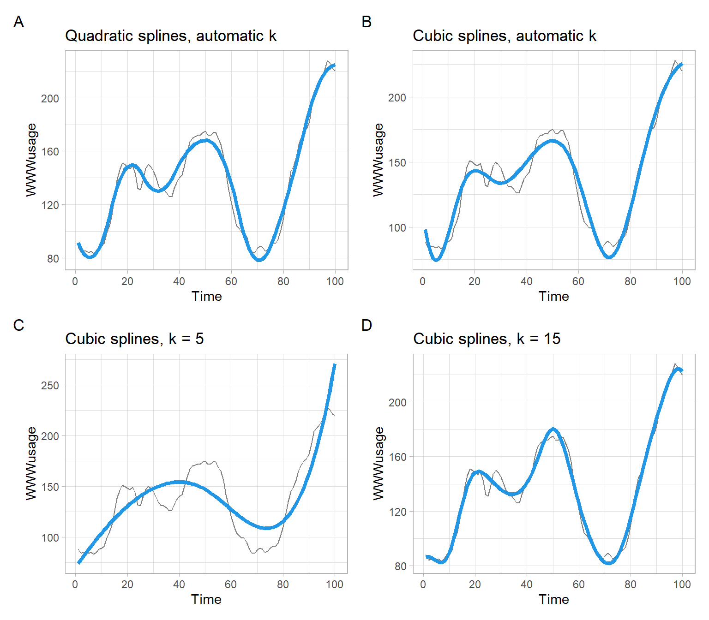
Figure 3.20: Results of regressing WWWusage on time, using the smoothing splines.
Summary of the last model using cubic smoothing splines:
NoteExample: GAM of the airline passengers time series
Consider fitting a GAM to the airline passengers time series. Similar to our previous analyses, we need to apply logarithmic transformations to stabilize the variance and transform the multiplicative seasonality to additive, but now we have a few more options to choose from. We may continue assuming a lognormal distribution of the response with the identity link \(g(\mathrm{E}(Y_t)) = \mathrm{E}(Y_t)\)\[
Y_t \sim LN(\mu_t, \sigma^2) \text{ or equivalently } \ln(Y_t) ~ N(\mu_t, \sigma^2)
\tag{3.7}\] or use a normal distribution with the logarithmic link function \(g(\mathrm{E}(Y_t)) = \ln(\mathrm{E}(Y_t))\): \[
Y_t \sim N(\mu_t, \sigma^2).
\tag{3.8}\] The main difference between these options is how the errors are interpreted.
For the expected values, we will use a GAM with smoothing splines applied to the numeric time and month: \[
g(\mu_t) = \alpha_0 + f_1(t) + f_2(Month_t).
\] This model will capture a potentially non-monotonic trend and seasonality. We will use cyclical splines for \(f_2(\cdot)\). Cyclical splines have an additional penalty to ensure a smooth transition between the last and the first month of the annual cycle (from December to January).
Below we fit the model for both distribution families, lognormal with the identity link function (Equation 3.7) and normal with the logarithmic link (Equation 3.8):
t<-as.vector(time(AirPassengers))month<-as.numeric(cycle(AirPassengers))m_lno<-gam(log(AirPassengers)~s(t)+s(month, bs ="cp"), family =gaussian(link ="identity"))m_no<-gam(AirPassengers~s(t)+s(month, bs ="cp"), family =gaussian(link ="log"))
Figure 3.21 shows the results of smoothing are quite similar. In both cases, we were not able to fully remove seasonality from the data, based on the residual autocorrelation at the seasonal lag of 12 months.
Code
p1<-pAirPassengers+geom_line(aes(y =exp(m_lno$fitted.values)), col =4, lwd =1.5)+ggtitle("GAM smoothing using lognormal distribution")p2<-forecast::ggAcf(m_lno$residuals)+ggtitle("ACF of residuals, using lognormal distribution")+xlab("Lag (months)")p3<-pAirPassengers+geom_line(aes(y =m_no$fitted.values), col =4, lwd =1.5)+ggtitle("GAM smoothing using normal distribution with log link")p4<-forecast::ggAcf(m_no$residuals)+ggtitle("ACF of residuals, using normal distribution with log link")+xlab("Lag (months)")(p1+p2)/(p3+p4)+plot_annotation(tag_levels ='A')
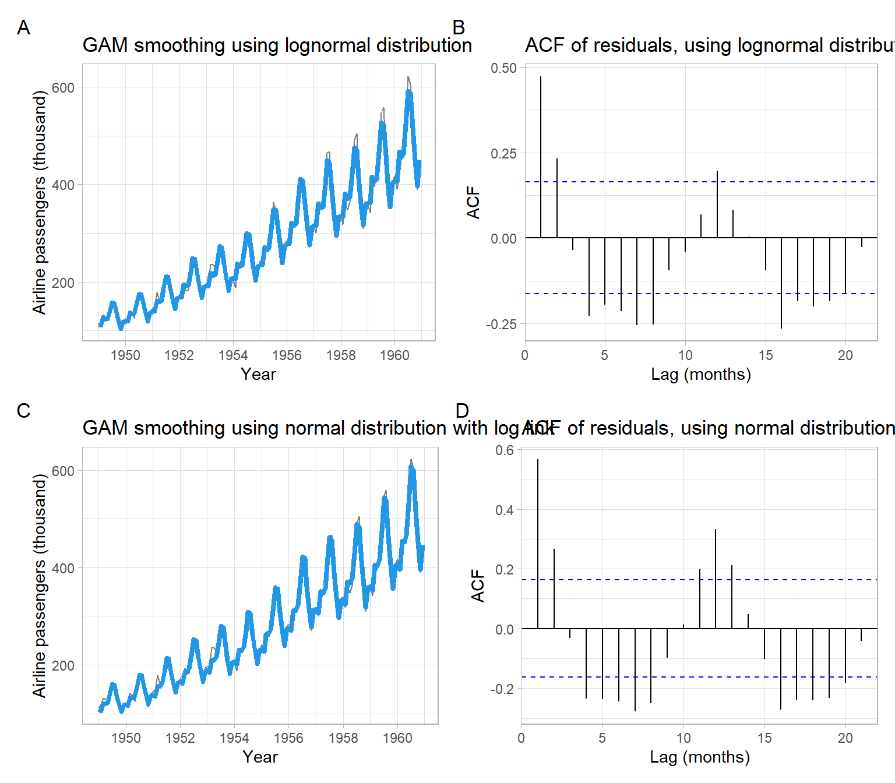
Figure 3.21: Plots of the AirPassengers data smoothed with GAMs and ACFs of the residuals.
We might prefer using the formulation in Equation 3.8 since it captures the most recent peaks better (Figure 3.21 C) than the alternative (Figure 3.21 A), however, more rigorous numeric comparisons can be performed.
The fitted smooth functions can be visualized using plot(m_no) or using the ggplot2-type graphics as in Figure 3.22. Note that the smooths are centered at 0 for the identifiability. This model used approximately 8.069 degrees of freedom to fit the trend, which is much more than the polynomial regression used. To fit the seasonality, the GAM used approximately 8.922 degrees of freedom, which is between the numbers for the regressions with Fourier series (4) and categorical months (11). Note that the quality of removing seasonality by GAM in this case is also between the regressions with Fourier series (strong autocorrelation at the seasonal lag remains, Figure 3.16) and categorical months (no significant autocorrelation at the seasonal lag, Figure 3.15).
Figure 3.22: GAM smoothers. Solid curves are the function estimates, dashed curves are 2 standard errors above and below the estimate. The y-labels show the variable to which the smoothing splines were applied and the approximate degrees of freedom used for the smooth.
3.7 Differencing
A big subset of time series models (particularly, models dealing with random walk series) applies the differencing to eliminate trends.
Let \(\Delta\) be the difference operator (\(\nabla\) notation is also used sometimes), then the simple first-order differences are: \[
\begin{split}
\Delta Y_t &= Y_t - Y_{t-1} \\
&=(1-B)Y_t,
\end{split}
\] where \(B\) is a backshift operator.
The backshift operator and difference operator are useful for a convenient representation of higher-order differences. We will often use backshift operators in future lectures: \[
\begin{split}
B^0Y_{t} &= Y_{t} \\
BY_{t} &= Y_{t-1} \\
B^{2}Y_{t} &= Y_{t-2} \\
& \vdots \\
B^{k}Y_{t} &= Y_{t-k}.
\end{split}
\] The convenience is because the powers of the operators can be treated as powers of elements of usual polynomials, so we can make different operations for more complex cases.
For example, if we took second-order differences, \(\Delta^2Y_t = (1-B)^2Y_t\), to remove a trend and then used differences with the seasonal lag of 12 months to remove a strong seasonal component, what would be the final form of the transformed series? The transformed series, \(Y^*_t\), will be: \[
\begin{split}
Y^*_t & = (1-B)^2 (1 - B^{12})Y_t \\
& = (1 - 2B + B^2) (1 - B^{12})Y_t \\
& = (1 - 2B + B^2 - B^{12} + 2B^{13} - B^{14})Y_t \\
& = Y_t - 2Y_{t-1} + Y_{t-2} - Y_{t-12} + 2Y_{t-13}-Y_{t-14},
\end{split}
\] but we will often use just the top-row notations.
We will discuss formal tests to identify an appropriate order of differences in future lectures (unit-root tests), but for now use the rule of thumb: for time trends looking linear use 1st order differences (\(\Delta Y_t = Y_t - Y_{t-1}\)), for parabolic shapes use differences of the 2nd order, etc. Apply the differencing of higher orders until the time series looks stationary (plot the transformed series and its ACF at each step). In practice, differences of order 3 or higher are rarely needed.
Note
A nonstationary time series that can be converted to stationary by taking differences is also sometimes called a difference-stationary time series or a time series with a stochastic trend. Very rarely, a time series may contain both deterministic and stochastic trends that need to be modeled or removed for further analysis.
NoteExample: Shampoo detrending by differencing
Remove the trend from the shampoo series by applying the differences.
Based on Figure 3.23, differencing once is enough to remove the trend. The resulting detrended series is \[
Y^*_t = \Delta Y_t = (1 - B)Y_t = Y_t - Y_{t-1}.
\]
Figure 3.23: Time series plot of shampoo sales with an estimated ACF and the differenced series with their ACFs.
A deterministic linear trend can be also eliminated by differencing. For example, consider a time series \(X-t\) with a deterministic linear trend: \[
X_t = a + b t + Z_t,
\] where \(Z_t \sim \mathrm{WN}(0,\sigma^2)\). The first-order differences of \(X_t\) remove the linear trend: \[
\begin{align}
(1 - B)X_t &= X_t - X_{t-1} \\
&= a + b t + Z_t - (a + b (t - 1) + Z_{t-1}) \\
&= a + b t + Z_t - a - b t + b - Z_{t-1} \\
&= b + Z_t + Z_{t-1}.
\end{align}
\]
NoteExample: Airline passengers detrending and deseasonalizing by differencing
Remove trend and seasonality from the log-transformed AirPassengers series by applying the differences.
Based on Figure 3.24, differencing once with the non-seasonal and the seasonal lags is enough to remove the trend and strong seasonality. The final series (denoted as D1D12) is \[
\begin{split}
D1D12_t & = (1 - B)(1 - B^{12})\lg Y_t = (1 - B - B^{12} + B^{13})\lg Y_t\\
& = \lg Y_t - \lg Y_{t-1} - \lg Y_{t-12} + \lg Y_{t-13}.
\end{split}
\]
Figure 3.24: Time series plot of the airline passenger series with an estimated ACF and the detrended (differenced) series with their ACFs.
3.8 Conclusion
We have implemented various methods for trend visualization, modeling, and trend removal. In each case, the method could be extended to also remove a strong seasonal signal. The choice of a method depends on many things, such as:
The methods require different skill levels (and time commitment) for their implementation and can be categorized as automatic and non-automatic.
Some methods are very flexible when dealing with seasonality (e.g., Holt–Winters), while others are not.
The goal of smoothing and desired degree of smoothness in the output.
Some of the methods have a convenient way of getting forecasts (e.g., exponential smoothing and polynomial regression), while other methods are more suitable for interpolation (polynomial regression) and simple visualization (simple moving average), or just trend elimination (all of the considered methods are capable of eliminating trends, but differencing is the method that does nothing else but the elimination).
Remember that forecasted values (point forecasts) are not valuable if their uncertainty is not quantified. To quantify the uncertainty, we provide prediction intervals that are based on the past behavior of residuals and careful residual diagnostics (such as described in the previous lectures).
The evaluation of the methods may involve splitting the time series into training and testing periods. Overall, this lecture focused on presenting the methods themselves, while residual diagnostics and evaluation on a testing set were omitted due to time constraints.
While the considered methods are among the most common, there are many more smoothing methods that can be applied to time series, including machine learning techniques.
3.9 Appendix
NoteExample: Smoothing blocks
A student was concerned about applying smoothing to data with a block-like structure. Without a real dataset on hand, below we simulate a series \(X_t\) with the mentioned structure.
Code
set.seed(123)# Set number of blocksn<-10# Let the values of blocks come from standard normal distribution,# and length of block be a random variable generated from Poisson distribution:Xt<-rep(rnorm(n), times =rpois(n, 5))
Figure 3.25 shows an example of lowess applied to \(X_t\) to get a smoothed series \(M_t\).
We see that lowess estimates smooth trends. If we assume that trends are not smooth, then some other techniques (e.g., piecewise linear estimation) should be used.
Brockwell PJ, Davis RA (2002) Introduction to time series and forecasting, 2nd edn. Springer, New York, NY, USA
Cleveland WS (1979) Robust locally weighted regression and smoothing scatterplots. Journal of the American Statistical Association 74:829–836. https://doi.org/10.1080/01621459.1979.10481038
Kohn R, Schimek MG, Smith M (2000) Spline and kernel regression for dependent data. In: Schimek MG (ed) Smoothing and regression: Approaches, computation, and application. John Wiley & Sons, Inc., New York, pp 135–158
Wood SN (2006) Generalized additive models: An introduction with r. Chapman; Hall/CRC, New York, NY, USA